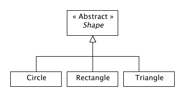

Polymorphism
Polymorphism allows an object to take on (assume) different
forms.
A good example of polymorphism:

Shape[] figures = new Shape[3];
figures[0]
= new Circle(10);
figures[1]
= new Triangle(5,12);
figures[2]
= new Rectangle(5,12);
The object figures is declared as type Shape.
We then can declare an instance of a Circle,
Triangle, Rectangle. Because these three classes
are derived from Shape (they satisfy the
IS-A relationship), we can declare them as such. This is an
example of type polymorphism.
Among other things, polymorphism allows the ease of statements
such as:
for(int
i = 0; i < figures.length; i++) {
figures[i].area();
System.out.println(figures[i]);
}
You should understand the distinction between:
- the declared variable type
- which determines what code will compile - and
- the created object type -
which determines what code will run.
The statement
Shape c
= new
Circle()
Shape
is the declared variable type, Circle is the created
object type.
Java Interfaces
Perhaps the best way of expressing polymorphism is with Java
interfaces. Java interfaces act as types
where they specify what an
object instance is to do, but not how
it is to be done.
Example
public interface Shape
{
/**
*
Returns
the
perimeter of a Shape object
*/
public double getPerimeter();
/**
*
Returns
the
area of a Shape object
*/
public double getArea();
}
Implementing the interface Shape.java
- Circle.java (Notice
the slight differences from the version we looked at from
above.)
Classes implement interfaces with the following syntax:
public class Circle implements Shape
{
/**
* Circle must implement all of the methods
* defined in the Shape interface.
*/
}
As a class, implement a class named Square that
implements the Shape interface.
<We will also go over the UML for representing these
relationships>